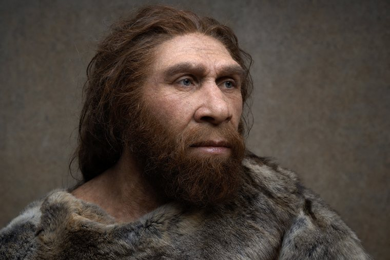

Homo neanderthalensis
Cold-adapted, big-brained and deeply human — our closest kin, and partly inside our own DNA.
Overview
Neanderthals are our closest known relatives, and the first extinct human species ever recognised, from an 1856 discovery in Germany. For hundreds of thousands of years they were the masters of Ice Age Europe and western Asia.
Far from the brutish cliché, Neanderthals were intelligent, skilled and cultured — and the genomes of nearly all living people outside Africa carry a small but real Neanderthal inheritance.
Anatomy & Body
Neanderthals were stocky and powerfully muscled, with a barrel chest, short limbs and a large projecting midface and nose — a build well suited to conserving heat in glacial climates. Their braincase was long and low but held a brain as large as, or larger than, our own.
Many had pale skin and some had red hair, inferred from ancient DNA.
Brain & Cognition
With brains of 1,200–1,750 cc, Neanderthals matched or exceeded modern humans in raw volume, though brain shape differed. They planned complex hunts, adapted to extreme environments, and cared for the injured and elderly over long periods.
Behavior & Culture
Neanderthals made refined Mousterian tools, hafted stone points to spears, used fire and birch-bark tar adhesive, wore pigments and feathers, and almost certainly buried their dead. Cave markings in Spain dated to before modern humans arrived suggest a capacity for symbolic expression.
Key Fossils
- Neanderthal 1 (Feldhofer, Germany) — the 1856 type specimen.
- La Chapelle-aux-Saints (“the Old Man”) — an aged, arthritic individual who was cared for.
- Vindija & Altai genomes — high-quality ancient DNA that rewrote our shared history.
Genetics & Legacy
Modern humans and Neanderthals interbred around 50,000–55,000 years ago. Today, most people of non-African descent carry roughly 1–2% Neanderthal DNA, influencing traits from immunity to skin and hair. Their extinction by ~40,000 years ago likely stemmed from a combination of climate stress, competition, and the demographic fragility of small populations — not a single catastrophe.
Discovery & history
In August 1856, quarry workers clearing a limestone cave in the Neander Valley near Düsseldorf dug out a skullcap and limb bones they took to be a bear. A local teacher, Johann Carl Fuhlrott, recognised they were not, and passed them to the anatomist Hermann Schaaffhausen. William King formally named Homo neanderthalensis in 1864 — the first extinct human species ever recognised.
It was not the first Neanderthal found, only the first understood. A child's skull from Engis in Belgium (1829) and a skull from Forbes' Quarry in Gibraltar (1848) had both been recovered earlier and set aside as unremarkable.
The species' public image was set by one bad reconstruction. Between 1911 and 1913 the French palaeontologist Marcellin Boule described the skeleton from La Chapelle-aux-Saints as stooped, bent-kneed and shuffling, with a divergent big toe. The individual he studied was severely arthritic and elderly, and Boule's own assumptions did the rest. The reconstruction was corrected in the 1950s, but the brutish stereotype it created has outlived the correction by seventy years.
Debates & open questions
Why did they disappear? There is no settled answer, and single-cause explanations have mostly failed. Competition with incoming Homo sapiens, climate instability during the last glacial, small and fragmented populations with low genetic diversity, novel diseases, and simple absorption through interbreeding have all been proposed. Current thinking leans toward a combination in which demographic fragility was the underlying vulnerability.
Were they capable of symbolic thought? The evidence keeps moving. In 2018 Dirk Hoffmann's team used uranium-thorium dating on carbonate crusts over cave paintings at three Spanish sites and obtained ages greater than 64,000 years — before modern humans are thought to have reached Iberia, which would make the art Neanderthal. Ludovic Slimak and others have challenged the dating method's reliability on these specific samples. The related question of whether the Châtelperronian tool industry was made by Neanderthals or represents borrowing from modern humans is similarly unresolved.
Could they speak? A Neanderthal hyoid bone from Kebara Cave in Israel is essentially modern in form, and Neanderthals carried the same two derived changes in FOXP2 that we do. Neither proves language, and both are consistent with it.
The 2010 draft genome resolved one question definitively: modern humans and Neanderthals interbred, and most people with ancestry outside Africa carry roughly 1–2% Neanderthal DNA.